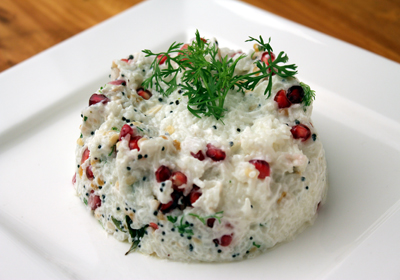

Rice - 1 cup
Water - 3 cups
Cold Milk - 1.5 cups
Curd - 1.5 cup
Cream - 2 tbsp
Salt - as needed
Cilantro - handful (finely chopped)
Oil - 1 tbsp
Mustard Seeds - 1/2 tsp
Channa Dal - 1 tsp
Urad Dal - 1 tsp
Dry Red Chilies - 2
Green Chilly - 1
Ginger - 1/2 "piece (minced)
Curry Leaves - 1 spring
Cook the rice with 3 cups of water and some salt. We need overcooked rice which gets easily mashed up. (Tip: If you have leftover rice, just reheat it with some additional water.)
Once the rice is cooked, mix and mash up part of the rice.
Add the milk and keep mixing till all the milk gets absorbed by the rice.
Once you add the cold milk, the rice will cool down. If it is still hot, wait for it to become lukewarm before you add the curd. This will prevent the curd from curdling.
Add the cream and yogurt and mix well.
Heat oil for tempering in a small pan and splutter the mustard seeds.
Add the channa dal and urad dal and wait for it to turn reddish brown.
Now add the dry red chilies, curry leaves, finely chopped green chillies and finely chopped ginger. Fry for a minute. (You can add some raisins and cashews too.)
Add this to the curd rice. Also add the finely chopped coriander leaves and mix together.
Curd rice is ready to be served. You can also garnish it with more chopped cilantro or grated carrots or chopped cucumber or fresh fruits like pineapple, pomegranate, grapes, apples